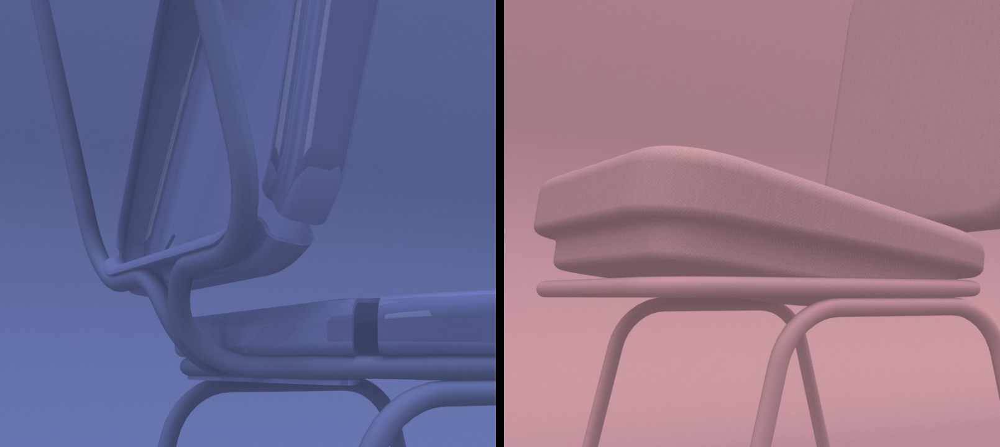
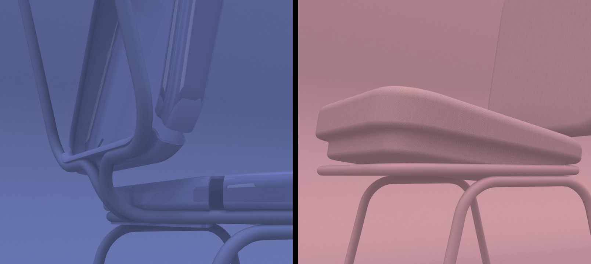

Loma is a simple stool design made with removable shells or cushions to interchange and create a variety of looks.
The stucture is made up of metal tubes that come in a assortment of colors as well. The shells can be soft or hard, with holes or flat.
Its design is simple with round corners. When combined with different materials and patterns the possibilities are endless.
 
